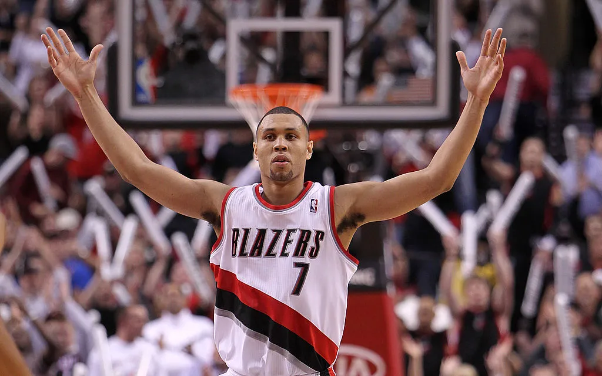

Brandon Dawayne Roy
Brandon Dawayne Roy, is an American basketball coach and former player. He serves as the head coach of the boys' basketball team at Garfield High School in Seattle.

Brandon Roy throwing his arms up in a Blazers uniform.
Here is a timeline of some of his life
- 1984 - Born in Seattle, WA
- 2002 - Started college at University of Washington
- 2006 - First-team All-PAC-10
- 2006 - PAC-10 Player of the Year
- 2006 - Drafted by the Portland Trail Blazers
- 2007 - Won Rookie of the Year
- 2007 - First child, Brandon Jr
- 2007 - Made NBA All-Rookie First Team
- 2008 - First All-Star selection
- 2009 - Second All-Star selection
- 2009 - Made All-NBA Second Team
- 2010 - Third All-Star selection
- 2010 - Made All-NBA Third Team
- 2010 - Second child, Mariah Leilani
- 2011 - Retired due to injuries
- 2012 - Unretired and signed with the Minnesota Timberwolves
- 2013 - Waived by the Minnesota Timberwolves
- 2016 - Named Headcoach of Nathan Hale High School
- 2017 - WIAA 3A State Champion as Headcoach of Nathan Hale High School
- 2017 - Received the Naismith National HS Coach of the Year at Nathan Hale High School
- 2017 - Roy was shot while attending a party at his Grandmother's home. Received non-life threatening injuries
- 2017 - Named Headcoach of Garfield High School
- 2018 - WIAA 3A State Champion as Headcoach of Garfield High School
- 2018 - Resigned as Headcoach of Garfield High School
- 2019 - Returned as Headcoach of Garfield High School
- 2023 - WIAA 3A State Champion as Headcoach of Garfield High School
“Brandon Roy 365, 7 days a week. Roy has no weaknesses in his game.”